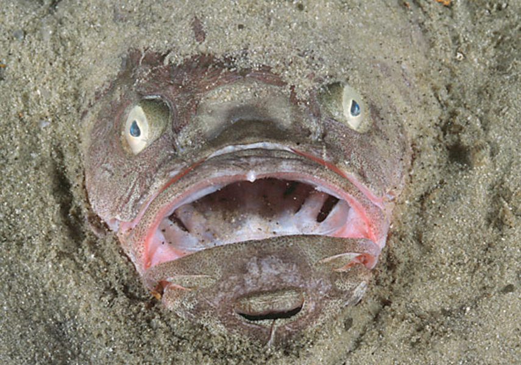
Bull
Bluedog Stragazer
4 inches
Great Barrier Reef
Plankton
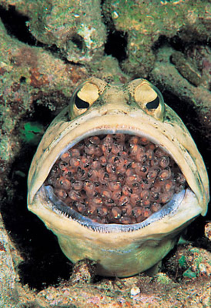
Jaws
Jaw Fish
3-4 inches
Great Barrier Reef
Plankton and Sea Kelp
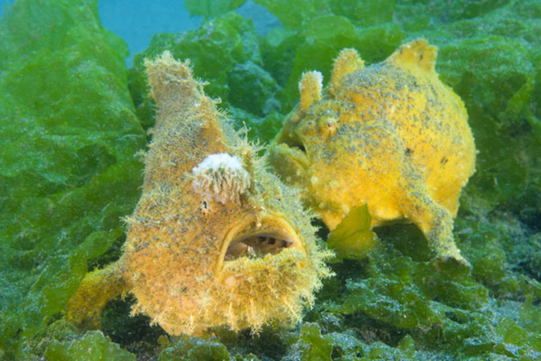
Froggy
Common Frog Fish
9 inches
Birmingham, AL
Sand
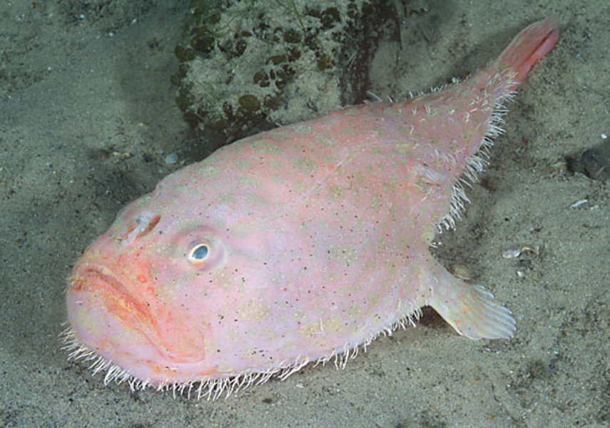
Dracula
Common Coffinfish
6 Feet
Transylvania
Blood of it's victims
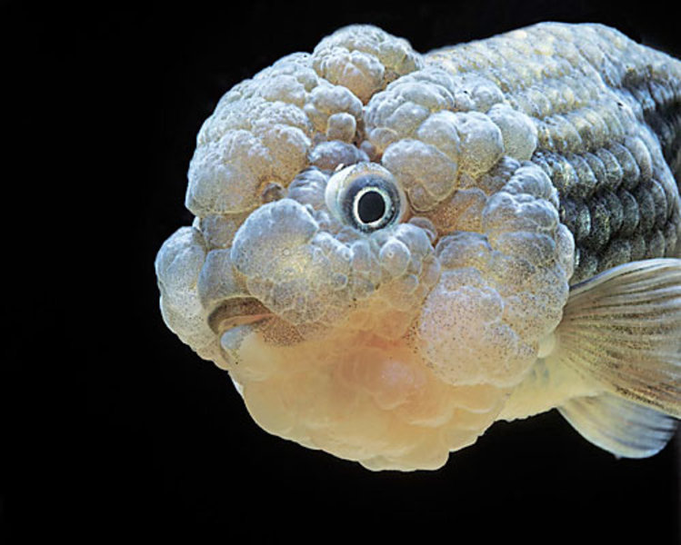
Einstein
Orange Goldfish
6-8 inches
Nashville, TN
Knowledge
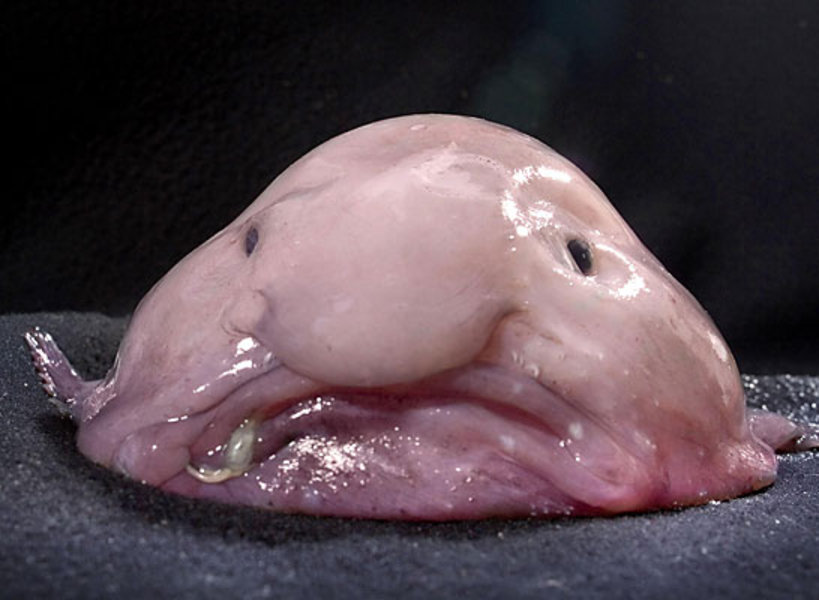
Pinky
Blob Fish
varies
East Coast
Diet Coke and French Fries
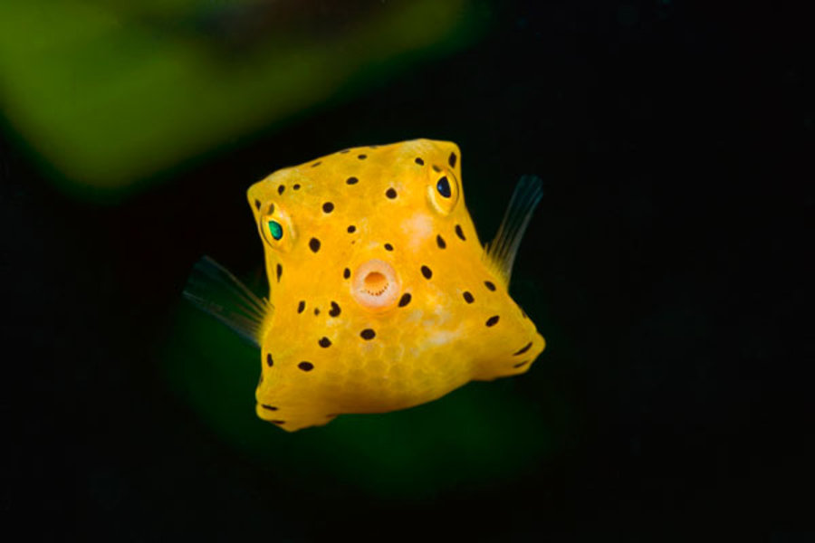
Square
Box Fish
12 inches
Topeka, KS
Cardboard
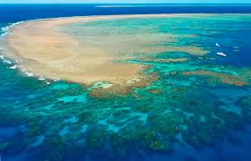
Great Barrier Reef
greatbarrierreef.org
One of Australia’s most remarkable natural gifts, the Great Barrier Reef is blessed with the breathtaking beauty of the world’s largest coral reef.
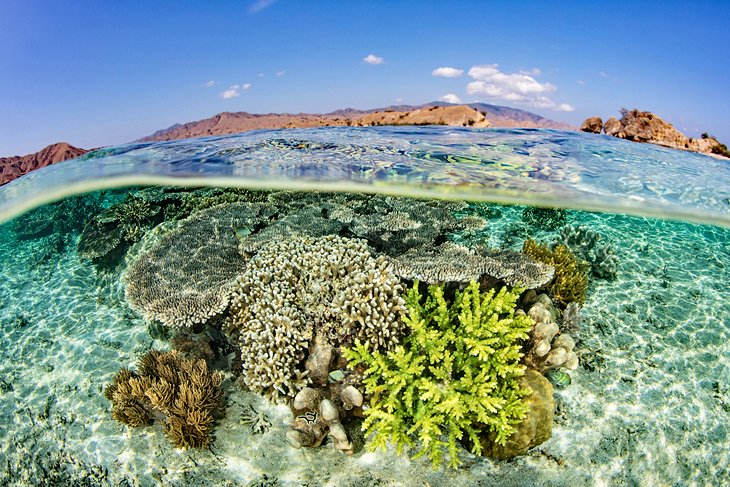
Komodo National Park
komodonationalpark.org
The reefs are thriving with an abundance of exotic undersea life, including dugongs, manta rays, sharks, and over 1000 species of tropical fish.
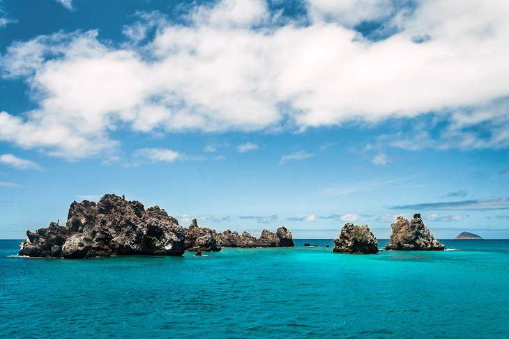
Devil's Crown
galapagosislands.com
Located off of Floreana Island, the Devil's Crown is a ring of jagged rocks that jut out of the water not too far from shore. They get their name from the fact that they look roughly like a crown
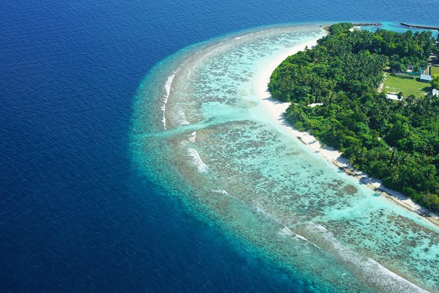
Baa Atoll
Baa Atoll Wikipedia
The 1,200 picture-perfect coral islands are surrounded by aquamarine waters, home to hundreds of vivid fish species and other marine animals, including sharks, octopii, and manta rays.